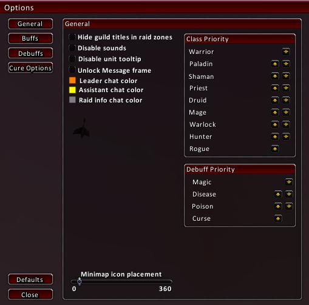
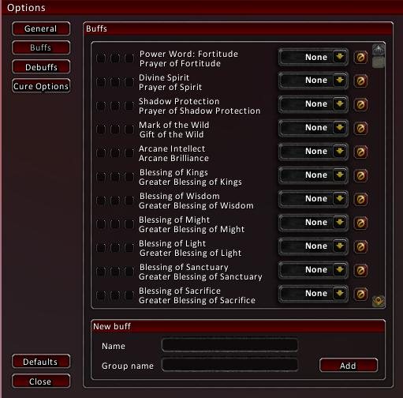
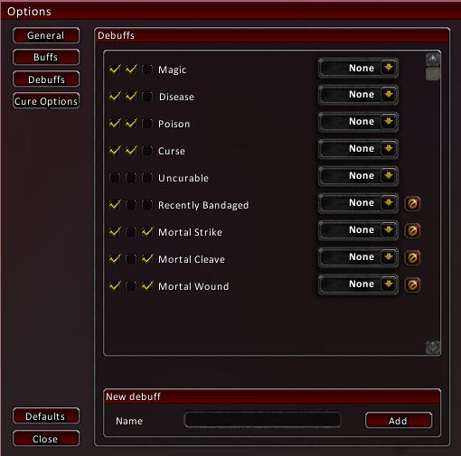
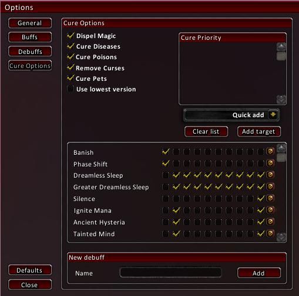
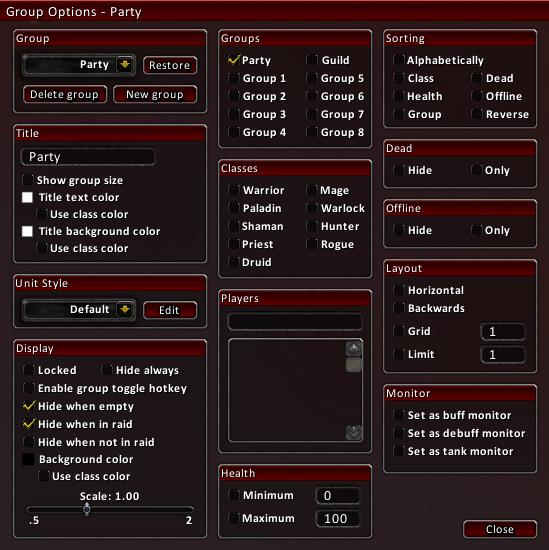
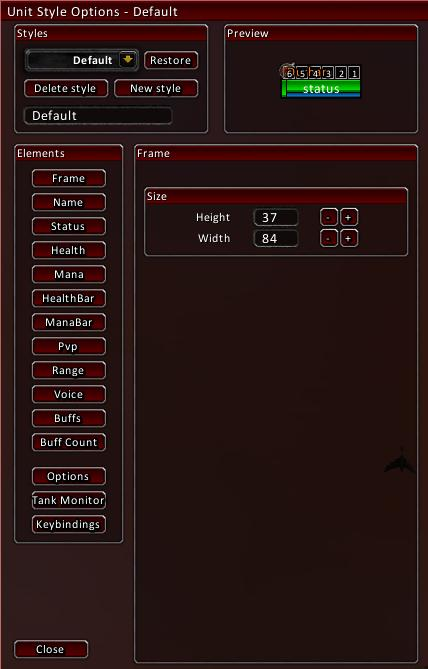

General
Class Priority: Sorts groups by this priority when sorting is set to class sort in Group Options.Debuff Priority: Whenever a UnitSytle's background or border type is specified, whichever debuff has a higher priority it will show up that color.

Buffs
1st checkbox: Show buffs in group windows.2nd checkbox: Show buffs in Buff Monitor.
3rd checkbox: Show buffs in Tank Monitor.
Drop Down Box: Puts a specified raid icon above people with that buff.
New Buff: Adds new buffs to the list. If a buff has a single and group target version add them in the appriopriate field, group name is for the group version if applicable.

Debuffs
See Above.
Cure Options
Use lowest version: Uses lowest rank of spell if available.Cure Priority: Priority list for curing group/raid members.
Quick Add: Quickly add people by group numbers or classes.
Ignore/Skip List: Allows you to add debuffs to skip classes or ignore the debuff altogether.

Group Options
Group: Add new groups, delete current groups, and restore default groups.UnitStyle: Select which style you want to use with this frame.
Health: Only Health meters between those values will show up.
Sorting: Sort by alphabetically, class, health, or group. Clicking dead and offline people sorts them to the bottom.
Dead/Offline: Hides or shows only dead and offline people.
Layout: Backwards, windows expand upwards when adding new people. Grid, displays the raid members evenly in a grid.
Monitors: Select to turn a frame into a monitor.

Unit Frame Options
Frame: The box everything is enclosed in.Status: Indicates stealth, feign death, dead, offline, etc.
Health Bar
Solo Height: Use when you are hiding rage, mana, energy.
Pvp: Indicates pvp status with the pvp icon.
Range: Indicates range with 4 variables, 10 yards, 30 yards, visible target, and not visible target.
Voice: Indicates someone talking in Ventrilo, bind your Ventrilo push-to-talk key to this in the WoW key bindings.
Buff Count: Number inside the buffs, for stackable buffs.
Keybindings: Very configurable bindings for mouse and keyboard.
Examples: Creating a raid window for only dead people and make a binding where you can click that person and it automatically casts rez, automatically heal people on the emergency monitor with a click, assist people with a single click, etc.
Point: Point on the frame to attach to something.
Relative: Where the above point attachs to another frame.
Attach: The frame it attachs to.
Frame Level: Use to make a frame "sit" on top of other frames.